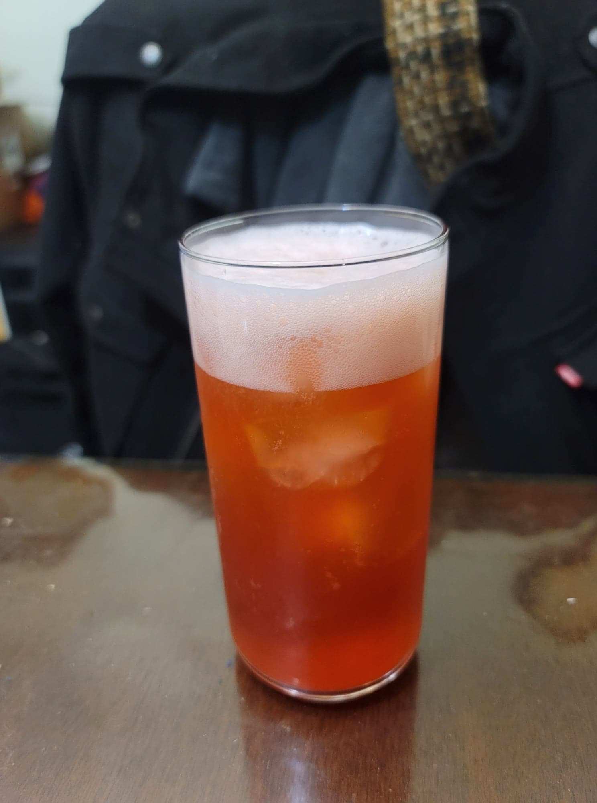

Strawberry Soda

Ingredients:
- 2 cups Strawberries, fresh or frozen
- 4 cups Water, nonchlorinated
- 1/2 cup Sugar
- 1/4 tsp Salt
- 1/4 cup Ginger bug
- Optional: Basil
Instructions:
- Heat a pot with the strawberries, water, sugar, and salt over high heat and bring to a boil. Then reduce the heat to a simmer and cover. Simmer for 10 minutes, then mash the strawberries with a potato masher. Re-cover and continue to simmer for 10 more minutes. Then remove from heat and let cool to room temperature.
- Stir in the ginger bug. Strain into flip-top bottles and add in 1 sprig basil per 16oz bottle if desired for strawberry basil soda. Let ferment for 3-7 days, or until carbonated to preference. Refrigerate and serve cold over ice.